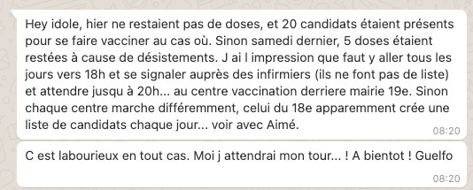
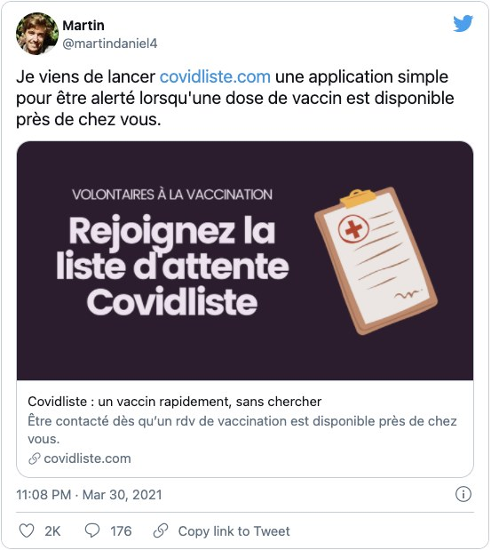
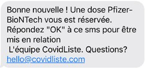
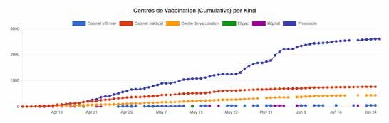
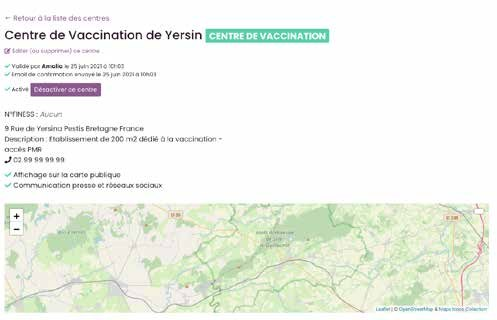
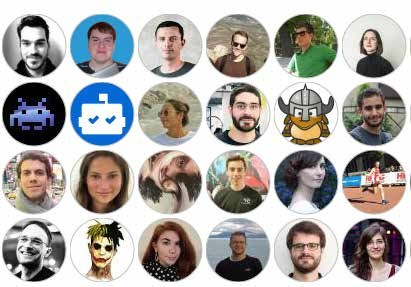
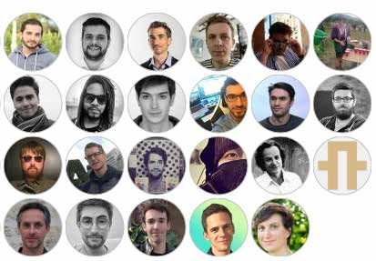
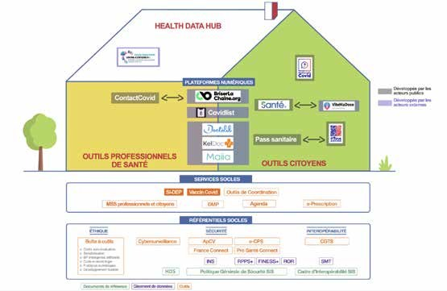
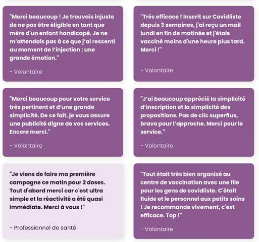
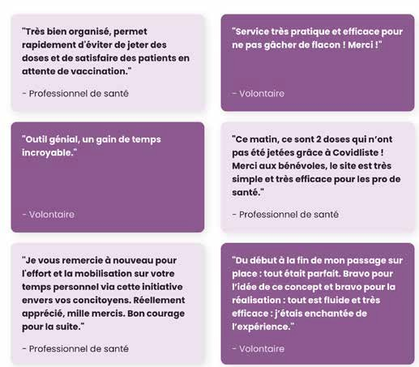

Before Covidliste, I spent five years in the Data Science team at Airbnb. In 2015 I also started Data For Good, asking how technology could serve the public interest.
My former manager Peter used to describe online marketplaces as "candy stores for economists". Because everything is measurable, data acts like a flashlight on imbalances between supply and demand. Those imbalances often show up first as anecdotes. At Airbnb it was "this destination is fully booked" or "prices are high for this kind of home". For vaccines, it was two friends, Aimé and Guelfo, who tipped me off on March 23: a vaccination center in Paris had reportedly thrown away doses while volunteers could not find a vaccine.

I talked about it with my friend Antoine Roux, a pulmonologist at hospital Foch, on March 24. We had already worked together on the Transplant project. I also told my friends Mathieu and Guillaume. Mathieu was in. Game on.
On Sunday, March 28, I had a bit of time and coded a first version. On the evening of the 30th I posted this message on Twitter. Word of mouth did the rest: 100 sign-ups the next day, 50k a few days later, 500k in 10 days.

The excitement was palpable: journalists, questions from volunteers, Twitter trolls, all at once. Yet the project was still fragile and could fall apart at any moment. I opened a Slack workspace and invited anyone who wanted to help. Nearly a hundred people signed up on their own, among them Gaëlle, Coline, Assen, Germain, Matthieu, Maxence and Florian, who would shape the rest of the project.
We needed reinforcements in key roles, people we could trust. Within days Sébastien (tech), Laëtitia (data science), Bertrand (operations), Juliette (public affairs), Émilie (press), Marc (recruiting and fundraising), Romain (automation, documentation), Clément (acquisition) and Antoine (legal) joined.
Our first priority was data security and privacy. Mathieu rewrote the app in Rails and, with Sébastien, moved the database to the most secure servers of our partner Scalingo in France. Data was encrypted before being stored and the code was open source. We eventually stopped storing names and exact addresses altogether: even if someone stole the database, it would be worthless. Thanks to Raphaël, the law firm McDermott Will & Emery supported us pro bono, and with Florian, our DPO, we set up the non-profit, legal notices and data deletion processes in record time.
We had lots of volunteers but no vaccination center using the platform. On April 2, I received a Twitter DM from a nurse in a Paris center: she had hundreds of doses on her hands and no one to give them to. I ran a quick query: thousands of eligible volunteers lived near her center.
Maxence and I put together a quick SMS prototype: a small script alerted volunteers and revealed the center's address once they replied. We ran a test and it worked. Our first person vaccinated through Covidliste was Mohan, 72, from Pantin. He gained a month on his original appointment.

Everything now depended on vaccination centers adopting the tool. No doses, no Covidliste. Bertrand, Gaëlle and Clément built a team dedicated to centers: some on acquisition, others on validating and supporting the centers that signed up. On social media, Assen and Juliette set up a simple routine to notify local officials and regional health agencies each time a center joined. Émilie wrote our first press release and we were picked up by most national and regional media.
Pharmacies and medical practices were the first to join. Covidliste was especially useful for them to use up AstraZeneca doses and save time managing their waiting lists. On April 6, we ran our first campaign with the Stade de France: 30 doses on Wednesday, then 400 Pfizer and Moderna doses gone in minutes the next day. By the end of that second week we had helped vaccinate 1,000 people, up from 50 the week before.


To get organized, we set up teams, each with its own Slack channel and a lead. Romain wrote documentation so every new volunteer could get up to speed on their own. With that in place, recruiting could scale: Marc posted on LinkedIn, and with Myriam and Marie-Laure ran hundreds of interviews. In total, close to 300 volunteers joined, and most of us never met in person.
On the product side, Laurie, Lucile, Damien and Pauline tracked features in GitHub issues, and we held product reviews with the design and tech teams to settle open decisions. Because the code was open source, about 50 developers contributed pull requests, and we invited the most talented to Slack: Navid, Guillaume, Adrien, Ardjo and others.
And since "without data, you're just another person with an opinion", Laëtitia and Antoine from the data science team helped everyone prioritize: should we ship this feature? Where should we focus center acquisition? What makes a campaign succeed or fail? The support team led by Matthieu went from 700 emails a day to fewer than 50, thanks in part to Germain, who answered emails and then coded the fixes. To keep everyone aligned, I recorded a short Loom video once or twice a week to share context and set the direction.


Then a new problem: we were spending too much money. Our first system sent one SMS per notification. An SMS costs €0.05 and we were sending close to 150,000 a week. In barely three weeks our personal credit cards had been charged about €15,000.
First, we cut costs. Mathieu designed a new notification algorithm by email, first come, first served. Email is almost free, but would it work as well as SMS? We ran our first A/B test and the answer was yes: costs dropped 10x while the fill rate held steady.
Second, we launched a crowdfunding campaign. The founder of Ulule advised us to launch fast and record a video. When the agency that joined us asked about budget and timeline, the answers were "zero" and "we launch the day after tomorrow". About 1,000 individuals, companies, the Fondation de France and the Ministry of Health helped us beat our initial goal more than 3x.
In the very first week, the Covid-19 Vaccination Taskforce at the French Health Ministry (DGS) reached out and we stayed in regular contact. Once an audit by the French Digital Health Agency (ANS) validated the quality and security of the platform, regional health agencies were told that Covidliste was an approved solution to manage waiting lists.
We also integrated Pro Santé Connect (thanks Germain), which lets healthcare professionals verify their identity with their e-CPS card. It sped up center validation considerably and is a good example of a digital commons citizens can build on.

What stays with me is the energy, and how quickly determined citizens can organize to solve a problem on the ground. The recipe is simple: build tools that make the daily life of healthcare professionals better. That is the goal of Hostolab, the non-profit we created to run Covidliste and, we hope, other simple, useful and open projects in the future.


Thank you all for your unwavering commitment! The code is still available on GitHub.